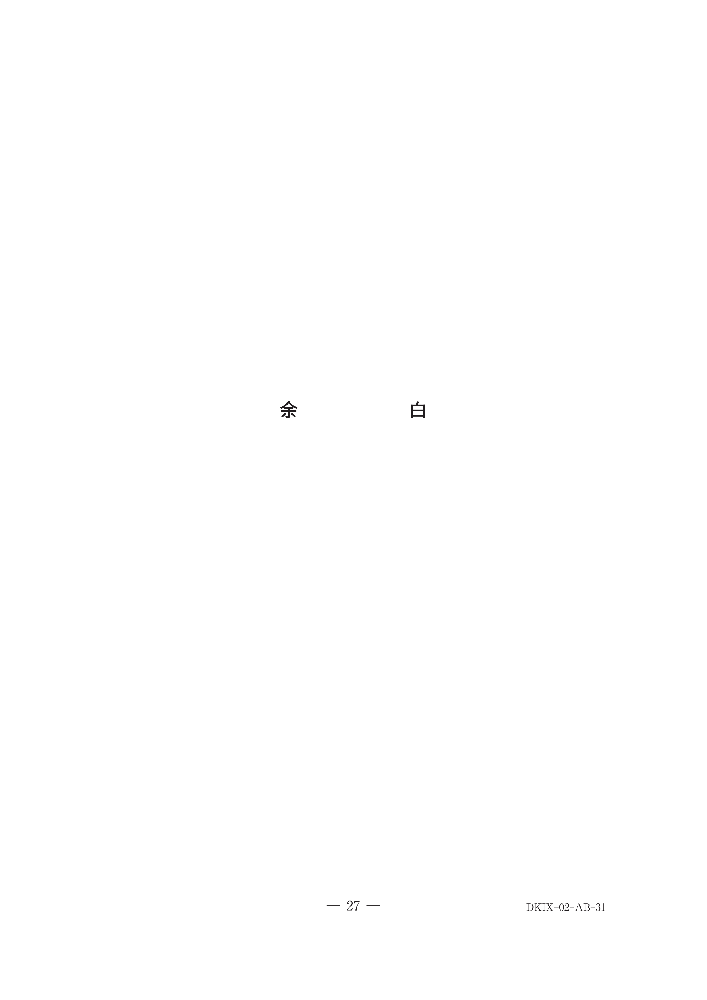
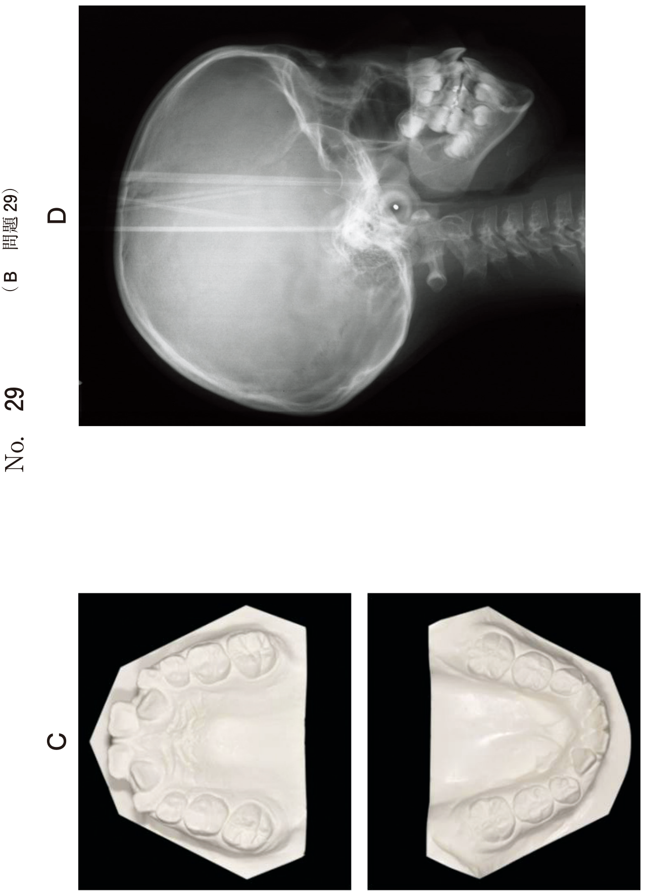

暫間上部構造（プロビジョナルレストレーション）は、最終上部構造を装着するまでの間に使用する仮の補綴装置である。インプラント体から粘膜を貫通するアバットメント部分と、最終歯冠形態を模倣した上部構造部分から構成される。
歯頸部から歯冠部に移行する立ち上がりの形態。インプラント周囲の軟組織形態に大きく影響する。
※即時重合レジンを筆積みして粘膜貫通部の形態を修正・調整することが多い
オッセオインテグレーション獲得後も、すぐに強い咬合負荷を加えることは望ましくない。暫間上部構造を用いて徐々に咬合負荷を増加させていく方法。
| 器具 | 用途 |
|---|---|
| コンタクトゲージ | 隣接面接触の確認 |
| 補綴スクリュー用ドライバー | スクリュー固定（締結） |
| 咬合紙 | 咬合接触の確認 |
65歳の男性。下顎右側臼歯部欠損による咀嚼困難を主訴として来院した。検査の結果、インプラント治療を行うこととした。治療過程の口腔内写真（別冊No.31）を別に示す。
矢印で示すインプラント周囲組織の形態付与に用いたのはどれか。1つ選べ。

【解説】写真では周囲軟組織が解剖学的な歯頸部形態に誘導されている。インプラント周囲組織の形態付与（エマージェンスプロファイルの形成）に用いられるのはプロビジョナルクラウン（暫間上部構造）である。カバースクリューは2回法の一次手術後に使用。ヒーリングアバットメントは二次手術後の粘膜貫通部形成に使用するが、解剖学的形態への誘導はプロビジョナルクラウンで行う。
60歳の男性。上顎左側臼歯部にインプラント埋入手術を行った。オッセオインテグレーションを獲得後、暫間補綴装置を装着することとした。暫間補綴装置の装着前後の口腔内写真（別冊No.37A、B）を別に示す。
装着時に必要なのはどれか。2つ選べ。

【解説】暫間補綴装置（暫間上部構造）の装着には、コンタクトゲージで隣接面接触を確認し、補綴スクリュー用ドライバーでスクリュー固定を行う。写真からスクリュー固定式であることがわかる（スクリューホールが見える）。歯肉圧排器は印象採得時、セメントスパチュラはセメント固定式の場合に使用。